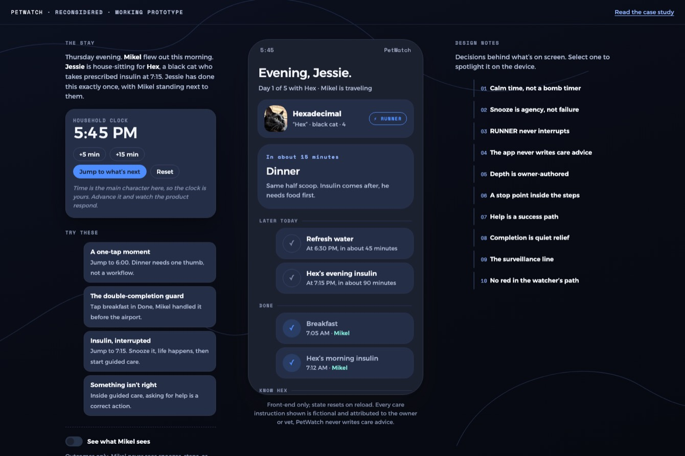
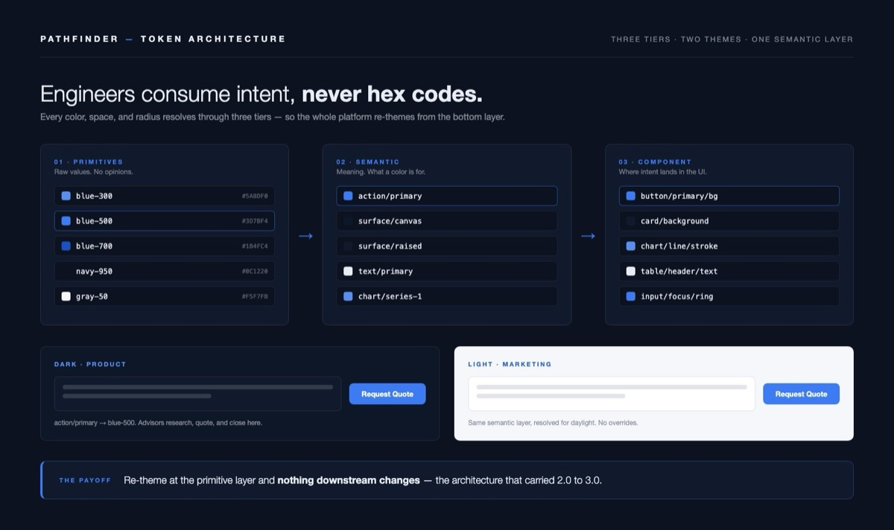
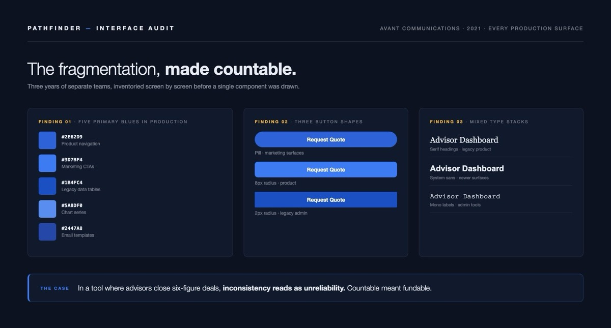
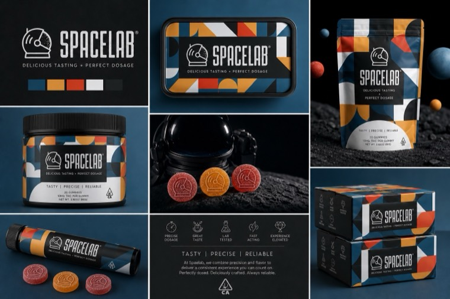
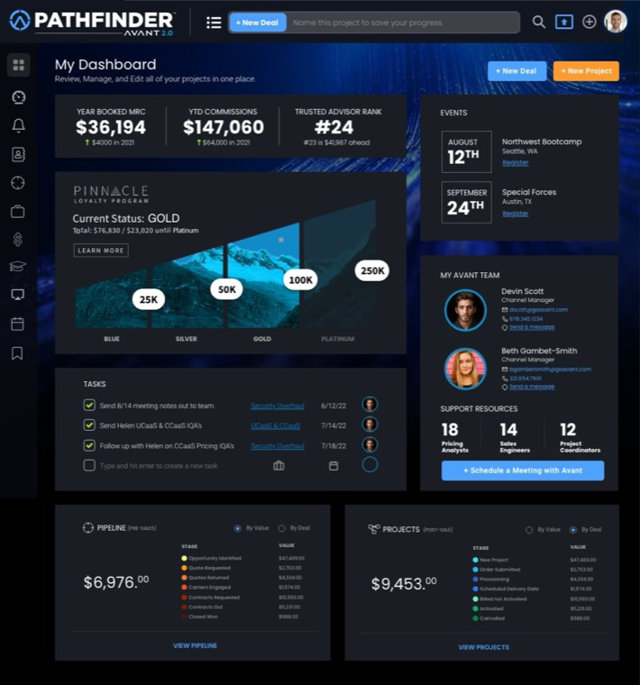

Mikel Rosenthal · product design
Five stages. A prototype you can click by week three, not week nine. I use AI heavily and I'll show you exactly where, including the places it was confidently wrong and I had to overrule it.
Same shape whether it's a six-week project or a four-hour exercise.
Once for what it says. Once for what it takes for granted. I'm hunting for the thing nobody wrote down, because that's usually the expensive one.
On a recent assignment the brief described an app where you could schedule care for a pet and watch someone else do it. There was nowhere to mark anything as done. Nothing in the document said that was missing. You only find it by reading closely.
I write down what governs the project: the words we'll use for things, what we're deliberately not building, the accessibility floor. Then I choose which of my AI tools to switch on, and how far to turn them up.
A calm care app and a dense data dashboard need very different settings. Picking those settings is a design decision, so I make it out loud.
Ninety minutes, one room, before anything is designed. Everyone writes the problem in one sentence on their own, and then we read them out. They never match, and it's much cheaper to find that out now.
We leave with one number we're trying to move and a written line for what's not in version one.
Something you can click by week three. Not a slideshow about it. A prototype ends arguments that a description keeps going.
Every state gets built, including empty, error and offline, because those are cheap to build now and they're where products quietly get worse. And I write the reasoning onto the screens as I go, so it travels with the work instead of living in my head.
A written record of what we chose, what we turned down, and what would make us reopen it. The colour, type and spacing rules in a format your engineers' build can read directly. Documentation generated from the same source as the components, so the two can't drift apart.
The test I hold myself to is whether your team still needs me in the room. They shouldn't.
This is the question I get asked most, so here it is plainly.
Spotting what's missing. Every decision about what we cut. Which question is worth researching. And taste, which is mostly knowing when a correct-looking answer is wrong for this particular product.
It gives me options, I pick one, and I'm the one who has to defend the pick. Most of the work actually lives here.
Reading everything. First drafts. Building the front end. Listing the weird cases I'd miss at four in the afternoon. Keeping everything consistent.



Twenty-odd years, a lot of it in regulated work at GE Healthcare, Blue Cross Blue Shield and AbbVie, where everything you make goes past a reviewer before a customer ever sees it.
Brand and product for Nike, Disney, Crate & Barrel, Whirlpool, Herman Miller and Aflac. Identity through interface, not one or the other.
Red Dot Award for Interface Design, 2020, for GE Healthcare's Edison system. Fast Company Innovation by Design.
None of this process is new. What's new is that the expensive parts of it got cheap, so a small team can now afford the version that used to need a big one.
More on where this came from
